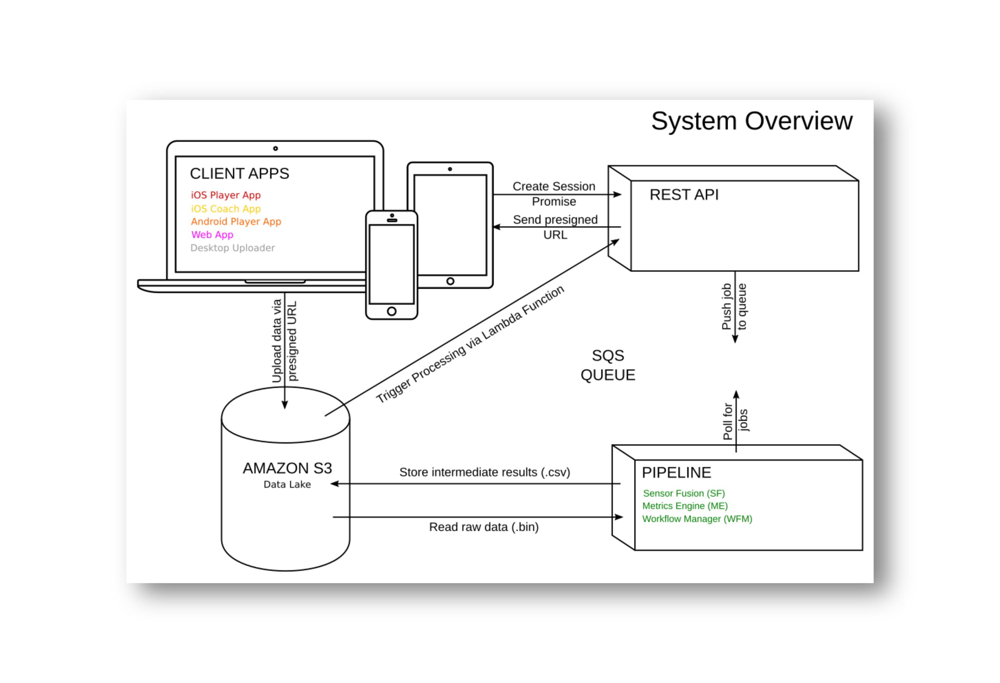

At TRACKTICS we aim to bring sophisticated tactical analytics and performance stats (which have so far been reserved to elite clubs and players) to the lower football leagues, by developing a GNSS-IMU based tracking solution that fits the tight budgets of an average amatuer player or coach, but is yet accurate enough to provide valuable insights for injury prevention and training control.
One of the key ideas that we have put forward in order to achieve this goal was to repurpose methods from the field of sensor fusion, commonly used in fields like autonomous driving or robotics, for the use case of football data enrichment, thus accounting for potential shortcomings in raw data quality caused by inexpensive hardware components and allowing our system to achieve state-of-the art accuracy, akin to that of much more expensive systems.
In the following article I am summarizing TRACKTICS’ (or more accurately, its tech team’s) journey towards achieving this goal. While the focus of this article is on on our highly-available and fault tolerant data analysis pipeline (“pipeline” in the following) I will also touch upon our core sensor fusion algorithm and our “continuous evaluation” framework.
System overview
Before going into detail about the “pipeline” I would like to go one step backwards, and start with delineating the most important business requirements driving the work of TRACKTICS Tech-team. Most importantly, the target system architecture was meant to …
provide high-quality estimation result, superior to what can be achieved by off-the-shelf fitness TRACKERS and comparable to that of professional GPS-based football tracking solutions by Catapult or GPSports.
be optimized for a strong user experience, through exciting Apps, and a strong emphasis on wearing comfort - in particular we wanted to get rid of the widely despised “Sports-Bras” which are used by practically any competitor system.
be affordable to the average youth and amateuer player or semi-professional, and ambitioned Coaches from European 4th leagues and downwards.
allow for rapid scaling to tens and hundreds of thousand users.
Before I joined TRACKTICS Tech team in 2016, TRACKTICS had already developed a powerful GNSS-IMU based sensor hardware tailored for the for the logging of movements of a football player during game or training sessions a first version of a Web App that allowed one to visualize basic metrics inferred using an Extended Kalman Filter (executed in an offline manner) to combine the GNSS IMU and Compass readings from the tracker. Yet the

SLAM for football analytics
To improve upon the estimation results that could be achieved with our first prototype algorithm, we teamed up with sensor fusion experts from Knowtion to develop a new and more powerful estimation approach based on the the GTSAM library - a toolkit commonly used for SLAM (Similtaneous Localization and Mapping) applications and other types of robotics and vision. GTSAM is implemented in C++, uses Factor Graphs and Bayes Networks as its underlying compute paradigm and provides a modern IMU preintegration scheme and convenient Python bindings for rapid prototyping.
In the initial stages of designing our algorithm we were faced with the question whether to go for near real-time online estimation, which is supported by GTSAM’s iSAM2 module, which … in small increments. Yet, since initial experiments showed slightly better estimation results for the more conventional batch processing approach, that allows to better account for the estimation of global parameters (such as the local magnetic field at the recording location or hardware-related corrections such IMU and magnetometer biases and scaling factors). Thus, in light of our premisse to ensure as high quality estimation results as possible…
Our sensor fusion algorithms are compute intensive Therefore the task at hand doesn’t clearly fit, but since our sensor fusion algorithm involves. Online vs.
Relatively generous latency requirements of a few minutes. Users can see the estimation results after 3-5 minutes. As our user journey involves a few steps where the user is asked to input meta information about their data (e.g. adding geographic coordinates of the football pitch or events) the perceived waiting time could be reduced.
As our sensor hardware has relatively narrow price and dimension constraints and regulatory reasons (the current regulations on sensory hardware that may be applied during … games, put forward by FIFA, real-time capabilities that would allow the) TRACKTICS opted for an approach where data analysis is entirely performed in the cloud.
Stitching it together
As soon as we were happy with the overall performance of our algorithm w.r.t. the groundtruth data that we had collected, we were facing the challenge to run. In the rrecent years, there have been a number of blog posts (see, for example, the interesting article by Ville Tuulos from AdRoll, which was one of the inspirations for our pipeline) describing architectures, that are meant to handle quite similar batch processing type workloads as ours. Interestingly, these architectures often converge to a surprisingly similar configuration, based on the following main building blocks:
An object storage solution like Amazons S3 (Simple Storage Solution) which is used like a cloud-native equivalent to a computers file system.
Docker for dependency management, that allows for a clearer separation of domains between application development and deployment/operation of the batch processing workflow.
A container orchestrator (like Kubernetes or Amazon EC2 Container Service) combined with some Auto-Scaling solution (with a custom scaling logic) for resource management.
A workflow manager to stich together the workflow (like Spotify’s Luigi or AirBnB’s Airflow)
In our case, we also required the following components:
A resilient messaging system (like Amazons Simple Queuing System or Apache Kafka) as a fault-tolerant way to handle our job queue.
A REST API as a communication link between our batch processing pipeline and the various client apps that allow our user to view their data.
In such an architecture, each (short-lived) Docker container is responsible for running one to a few modules of a batch processing job. For example, in the simplemost case there might be one container running our sensor fusion algorithm and one container running some module to estimate soccer-related metrics (like the number of sprints, etc.). Each container can be seen idempotent function which is applied to a immutable piece of input data (a file on S3).
Docker comes in handy as it allows for an easy resource. Docker is mainstream, and can be installed within an instance on a developers laptop, this facilitates separation of concerns which, in our case, means that different modules along our pipeline are maintained by different people. The fact that building and running a Docker container locally is extremely easy, ensures that application developers can independently test their builds. If their containers runs locally its guaranteed to run in the production environment. As S3 is so cheap to use it is even affordable to store intermediate results upon demand, which simplifies detailed inspection of the data for troubleshooting.
As a workflow manager we opted for Luigi open-sourced by by Spotify in 2015. Spotify doesn’t comprise as many features compared to the more common alternative Airflow (by AirBnB), but is much more lightweight and easier to set up, which was the main reason for our choice.
CI/CD and Testing Strategy
To ensure swift rollout of new features and bug fixes, we use. Jenkins is Full () continuous integration and delivery approach using Jenkins. Beyond usual unit tests Parameter changes or even more profound algorithmic updates to our estimation algorithm. The only way to test such changes with. Important is to not overoptimize for a particular groundtruth dataset, but to find a good balance between groundtruth fit for different datasets.
Our grundtruth data includes a plethora of data from real game data, to jogging sessions where we have determined true distances, to high-precicion estimates of GNSS positions and velocities, acquired with an expensive RTK GNSS receiver, to light barrier data.
Conclusion
I will also touch upon some other aspects, like our groundtruth based evaluation approaches and our growing from a few early adopters after our product launch in 2017 to by now over 10000 active users all over Germany, Switzerland and Austria, thus becoming the market leader in the DACH region.